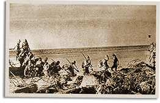

|
j
a v a s c r i p t |
May 5, 1942
"Manila ablaze with lights ... [blackout] shades removed" [Tribune]. None of ten persons I asked have bothered to take down their shades. Everyone expects another bombing of Manila, even without the Mindanao airfields.

Assault on Corregidor
The paper didn't mention Corregidor at all, but there were plenty of eyewitnesses who saw two Japanese planes go down yesterday with one falling in the Bay. A Japanese launch set out on a rescue mission, and on its return, it scattered a crowd of onlookers with machine-gun fire. The second plane crashed in flames trying to land at Nichols. The Philippine Red Cross was organized, and Vargas named Roces chairman. Camus, Madrigal, Paez, Arsenio Luz, L.R. Aguinaldo, Dr. Nicanor Jacinto, and Dr. Antonio G. Sison are among its 15 directors. |
|
|
|
|